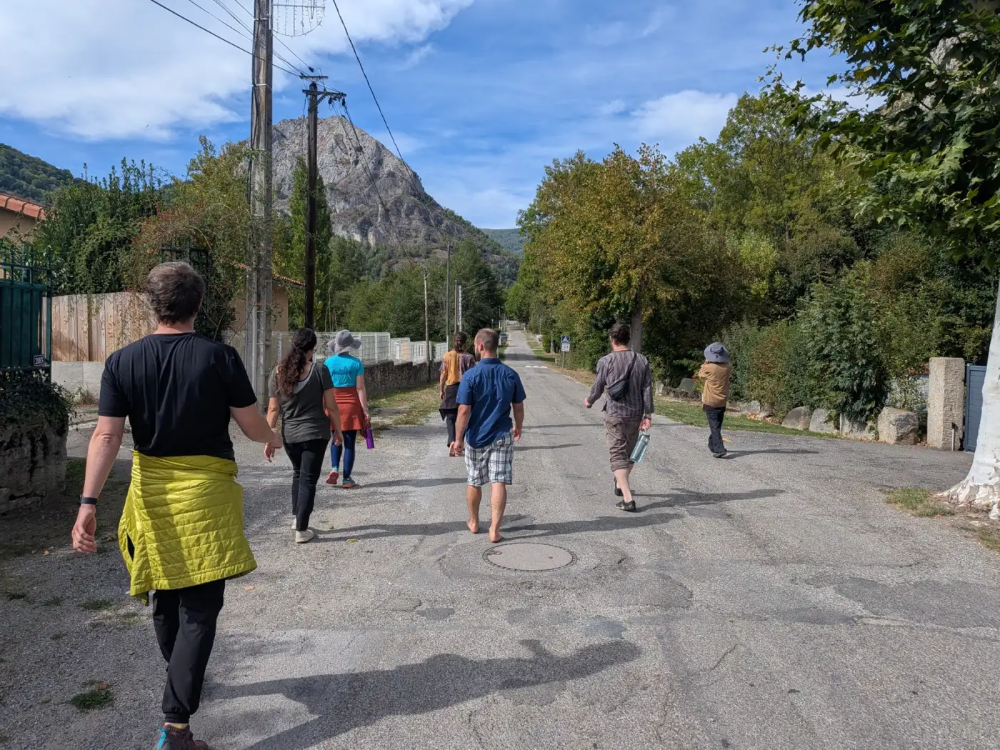

Complexity Science and Contemplative Studies Consortium
How do systems flourish without anyone in charge?
We are researchers in complexity science and contemplative studies, working on that question with equations and with meditation.
Latest
All events and outputs →Questions we work on
Research directions →Bayesian models of meditation. Agency of collective imaginaries. Relational construction of reality. Underneath the projects sit five questions, which the Honest Science workshop put on the wall in September 2026.
Who we are
People →
"I feel calm, unlike most conference days."
Since 2025: four gatherings, two working groups, 150+ researchers on the list. Physicists, biologists, cognitive scientists, philosophers and long-time practitioners from many traditions. We meet monthly online and a few times a year in person.
Join the community
You get one email a month: upcoming calls and gatherings, new talks and writing, and openings for research and funding. The monthly call is open to anyone curious, no affiliation needed.